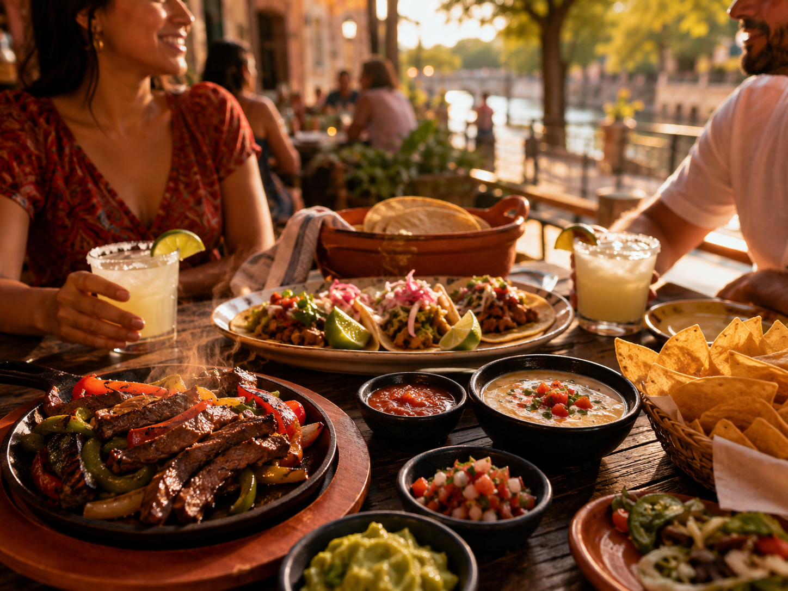

Path A · Visibility
Restaurant Partner Program
Visitor‑first guide opportunities, local relevance by area and dining situation, and outreach‑friendly support — reviewed for fit before any inclusion.
Request visibilityBuilt by The AI Plug
FOR SAN ANTONIO RESTAURANTS
Where To Go SA helps visitors choose where to eat by situation — resort nights, River Walk dinners, airport timing, business meals, family plans, and local food cravings.

Why this matters
Two ways to work with Where To Go SA
Path A · Visibility
Visitor‑first guide opportunities, local relevance by area and dining situation, and outreach‑friendly support — reviewed for fit before any inclusion.
Request visibilityPath B · Systems
Smarter intake, QR funnels, private event and catering flow, missed‑call follow‑up, and owner‑visible lead tracking — built by The AI Plug.
Ask about AI systemsRestaurant Partner Program
Partners can request visibility inside the contexts visitors already use — food picks, resort guides, downtown plans, airport timing, and Ask A Local. Every request is reviewed for fit with the guide’s visitor‑first experience.

AI Restaurant Growth Systems
The AI Plug builds practical restaurant infrastructure behind the scenes — not hype, not promises. Smarter intake paths, QR funnels, event and catering capture, follow‑up planning, and owner‑visible lead tracking where it helps.
Built by The AI Plug — the same team behind Where To Go SA’s visitor systems.
Proof of work
The guide is organized around how visitors ask for food, timing, resort plans, downtown nights, airport meals, and transportation help — not a directory of paid listings.
Food picks by cuisine, district, appetite, and the kind of night visitors want.
Resort-zone dining when convenience and timing matter more than another ride.
Business dinners, date nights, and walkable food-and-stroll plans.
Meal windows before flights and arrival-day food decisions along visitor routes.
Real visitor questions routed through a live local guide experience.
Restaurant inquiry
Share a few details and we will review your request for fit. Guide inclusion and business outcomes are not promised.